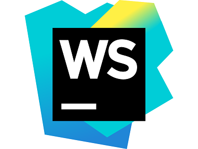

Webstorm and AFS
Git
WebStorm & AFS Tutorials

Autosave and Deploy Setup
File and Folder Creation Locally
File and Folder Creation on AFS
Brunt and Deployment Setup
Linux Commands and AFS
Check out the WebStorm product page!
Check out other WebStorm guides!
Check out more information about AFS on the NJIT website!